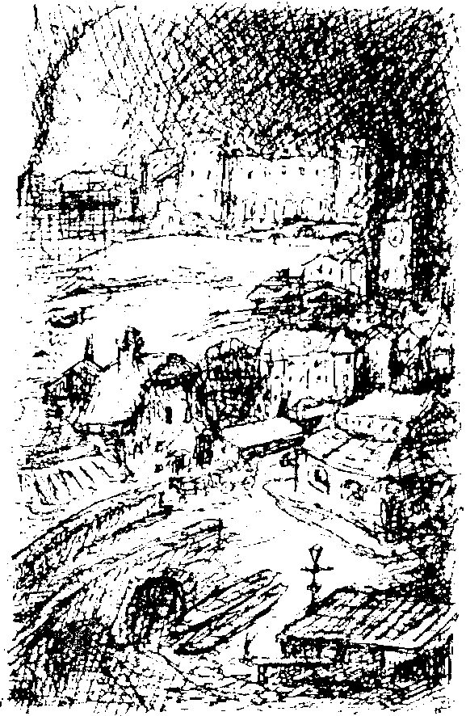

Bir süreliğine kişisel hatıralarımı anlatmayı bırakıp okuyucularıma yaklaşık üç sene boyunca ait olacağım ülkeyle ilgili bilgi vereceğim. Rüya Ülkesi’ndeki koşullar oldukça tuhaftı. Oradaki kuralları yavaş yavaş tanıdım ve aslında temel nedenlerini hiçbir zaman anlayamadım. Elimden, kendi deneyimlerimi ve diğer Rüya Ülkesi sakinlerinin anlattıklarını yazmaktan başka bir şey gelmiyor. Kırsal kesim hakkındaki düşüncelerimi kitabın çeşitli bölümlerine serpiştirdim, belki okuyucularımdan biri bunlarla ilgili daha iyi açıklamalar yapabilir.
Buradaki yaşam, Orta Avrupa’ya çok benziyordu, aynı zamanda çok da farklıydı. Bir şehir, köyler, büyük araziler, bir nehir ve bir göl vardı, fakat bunların üzerindeki gökyüzü sürekli kapalıydı. Güneş asla parlamazdı, geceleri ay ve yıldızlar asla görünmezdi. Kımıltısız ve kalın bir bulut tabakası toprakların üzerinde sürekli asılı dururdu. Fırtına çıkacağı zaman bulutlar dev kümeler halinde toplaşırdı, fakat onların üstündeki mavi gökyüzü her zaman gizlenirdi. Hikâyemde de pek çok kere bahsedeceğim bilge bir profesör, bu meteorolojik hadisenin geniş bataklıklar ve ormanlarla ilgili olduğunu söylemişti. Orada kaldığım yıllar boyunca güneşi bir kere bile görmedim. Önceleri bu durumu neredeyse katlanılmaz buluyordum, yeni gelenlerin hepsi böyle düşünüyordu. Bulutlarda zaman zaman gözle görülür bir parlaklık oluşuyordu, özellikle oradan ayrılmama yakın ufuktan gelen birkaç eğimli güneş ışığı hüzmesi şehre dokunup geçti, fakat parlak güneş asla görünmedi.
Bu şartlar altında çayırları ve tarlalarıyla toprakların nasıl göründüğünü tahmin edebilirsiniz. Hiçbir yerde gür, parlak bir yeşil göremiyordunuz, bütün bitkiler, otlar, çalılar ve ağaçlar donuk bir zeytin yeşili, bir tür yeşilimsi gri renkteydi. Geldiğimiz yerde renk şamatasından oluşan her şey burada donuk ve soluk renkteydi. Kır manzaralarının çoğu gökyüzünün mavisinden ve yerin sarı tonlarından oluşur, diğer renkler parça parça görülür, oysa burada her şeye gri ve kahverengi hakimdi. Gerçek bir manzarayı oluşturan parlak renkler yoktu, yine de Rüya Ülkesi’nin uyumlu bir görüntüsü olduğunu kabul etmek gerekir.
İklim genelde tıpkı bizim vardığımız zamanki gibi sıcak ve ılıman olmasına rağmen barometre sürekli “kapalı ve bulutlu” gösteriyordu. Mevsimler de tıpkı renkler gibi fazla çeşitli değildi. Beş ay bahar, beş ay güz yaşıyorduk; kısa, sıcak yaz boyunca gökyüzü hiç kararmazdı, oysa kışın, birkaç kar tanesi düşer, aydınlık yüzü göremezdik.
Rüya Ülkesi’nin kuzeyi, zirveleri her zaman sisle kaplı dev sıradağlarla çevriliydi. Sıradağların eteklerinde tepeler yoktu, eteklerin bittiği yerde ovalar başlıyordu. Büyük bir nehir olan Negro’nun kaynağı da bu dağlardaydı, nehir çağlayarak kayalardan fışkırır, bir geçit ağzından geçerek sulan neredeyse mürekkep karası diyebileceğiniz kadar koyu renkli, geniş, tembel bir akarsuya dönüşürdü. Daha sonra uzun, hafif eğimli bir kavisi takip ederdi, işte baş'* şehir Pearl bu kavise kurulmuştu. Biçimi ve renkleri bir üniforma gibi tekdüze görünen düzenli şehrin karanlık ve kasvetli silüeti çıplak toprakların ortasından yükseliyordu. Şehir otuz kırk yıldır orada olmasına rağmen insana sanki yüzyıllardır o topraklara aitmiş gibi görünüyordu. Kurucusu, şehri çevreleyen ağırbaşlı manzarayı bozmak istememişti. Şehirde göz kamaştırıcı, modern yapılar yoktu. Patera, geniş toprakları uyumla doldurmuş, Avrupa’nın her yanından eski binalar satın almıştı. Bütün bu binalar Rüya Ülkesi’nin tabiatına çok uygundu. Sağlam bir içgüdüyle, tek bir fikir doğrultusunda, uygun bir biçimde seçilmiş, bütüne uygun bir biçimde harmanlanmışlardı. Ben vardığım sırada şehirde 22,000 kişi yaşıyordu.
Daha sonra anlatacağım olayları anlamak açısından çok önemli olduğu için, okuyucular Pearl’de yollarını bulabilsinler diye kitaba şehrin küçük bir planını da koydum.
Gördüğünüz gibi, şehir dört ana bölümden oluşuyordu. Bir bataklığın yanıbaşında yer alan kurumla kaplı istasyon bölgesinde soğuk idare binaları, Arşiv, Postane ve benzer binalar vardı. Sıkıcı, çirkin bir bölgeydi. Zenginlerin yaşadığı, Bahçe Mahallesi denilen bölge istasyon bölgesinin hemen bitişiğindeydi. Sonra Uzun Cadde geliyordu. Burası alışveriş merkezi ve orta sınıfın yaşadığı bölgeydi.

Şehrin nehre doğru olan kısmı daha çok bir köy görünümündeydi. Uzun Cadde ve dağın arasına, dördüncü bölge olan Fransız Mahallesi sıkıştırılmıştı. Daha çok Latin, Slav ve Yahudi kökenli 4000 kişinin oturduğu bu bölgenin kötü bir şöhreti vardı. Buradaki çeşit çeşit insanlardan oluşan kalabalık, eski tahta evlerde üst üste yaşıyordu. Dar arka sokakları ve kötü kokulu tavernalarıyla bu bölüm, Pearl’ün en gurur duyduğu mahallesi sayılmazdı.
Hantal görünüşlü bir yığına benzeyen dev bir bina bütün şehre tepeden bakıyor ve hükmediyordu. Yüksek pencereleri tehditkâr bir biçimde toprakları ve aşağıdaki insanları seyrediyordu sanki. Sırtını iklim şartlarının aşındırdığı yumuşak bir kayaya yaslayan binanın dev gövdesi şehir merkezine, Büyük Meydan’a kadar uzanıyordu. Saray’dı burası, Patera burada oturuyordu.
Kuzeyde dağlar, batıda nehir, doğuda bataklık olduğu için şehir sadece güneye doğru genişleyebilirdi. Orada, mezarlığın yanında eski sahibinin adını taşıyan, Tomassevic Arazisi adında boş bir arazi vardı. Bir şekilde, bu arazide yürütülen inşa çalışmalarının hepsi felaketle sonuçlanmıştı. Binalar, daha çatıları tamamlanmadan yıkılmıştı. Buradaki inşa kalıntıları arasında en etkileyicisi bir firavunun ya da Asur kralının mezarına benzeyen dev bir tuğla yığınıydı. Hiçbir Avrupalının nehrin diğer yakasında yaşamasına izin verilmiyordu. Dış Yerleşim olarak bilinen bu bölgede, özel imtiyazlara sahip küçük bir köy vardı. Burayı ayrı bir bölümde anlatacağım.
Nüfusa gelelim. İnsanlar psikolojik yapıları kesin çizgilerle belirlenmiş tipler arasından seçilmişti. Üst sınıflar aşırı hassastılar. Sanki Rüya Ülkesi için doğmuş, hâlâ bırakmadıkları idée fixe’leri olan -koleksiyonculuk, okuma, kumar, din ya da binlerce kibar nevrotiklik çeşitlerinden birine sahip- insanlardılar. Kadınların büyük çoğunluğu histerikti. Kitleler de anormallikleri ya da tek yönlü zihinsel gelişimleri olanlar arasından seçilmişti, aralarında kusursuz ayyaşlar, kendilerine ve dünyaya katlanacak halleri kalmamış zavallı fahişeler, akıl hastaları, spiritüalistler, kavgaya her an hazır kabadayılar, bıkkın iştahlarını harekete geçirmek için yeni heyecanlar arayanlar, zinacılar, düzenbazlar, hokkabazlar, politik sığınmacılar vardı. Hatta başka ülkelerde aranan bazı katiller, kalpazanlar, hırsızlar ve benzerleri bile Efendimizin onayını almıştı. Kimi zaman bir insanın fiziksel görüntüsünde dikkat çeken bir özellik olması bile Rüya Ülkesi’ne davet edilmesi için yeterliydi. Bu, dev guatrlı, patlıcan burunlu ve kocaman kamburlu insanların ülkede çok sayıda olmasını açıklıyordu. Ayrıca, talihin karanlık bir cilvesi yüzünden doğası tuhaf biçimde değişmiş bazı insanlar da Rüya Ülkesi’ne çağrılmıştı. En masum dış görünüşün arkasından çıkabilen çeşitli karakterlere karşı dikkatli olmayı ancak zamanla öğrenebildim.
Ortalama nüfus yirmi ila yirmi dört bin arasındaydı, yeni gelenlerle birlikte sürekli değişiyordu. Doğumlarla nüfus artışı neredeyse hiç olmuyordu. Çocuk sahibi olma fikrine pek de sıcak bakılmıyor, çocukların verdikleri zahmetin çok fazla olduğu düşünülüyordu. Genel düşünce çok masraflı oldukları yönündeydi, büyüyene kadar çok masraf çıkarıyorlar, hemen hiçbir şeyi geri ödemiyorlar, ödediklerine lütuf gözüyle bakıyorlar, onları dünyaya getiren ebeveynlerine müteşekkir olmuyorlar, hatta tam tersine, büyük çoğunluğu, kendilerine verilen yaşam hediyesini istekleri dışında zorla verilmiş bir yükümlülük olarak görüyorlardı. Minik ayakların patırtısı büyük dertlerin yaklaşması demekti. Çocuklar tuhaf ve saftır, bunun pek çok örneği mevcut, fakat bu, çocuk sahibi olmak için yeterli bir neden değil. Rüya Ülkesi’nde insanlar var olan kuşağın bile bir kazanç beklemediği bilinmeyen gelecek için değil, her an yeni olaylara gebe olan şimdiki* zaman için yaşıyorlardı. Çocuk sahibi olarak sinirlerimizi daha kötü duruma getirmek, ya da karılarımızın yaşlanmasına neden olmak istemiyorduk. Çocuk sahibi olmak isteyenler sadece tek çocuk yapıyordu, daha çok çocuğu olanlar çocuklarını gelirken dışarıdan getirmiş demekti. Dokuz çocuğu olan bir aile vardı, çok ender görülen bir durum olduğu için daha sonra onlardan yeniden söz edeceğim. Dahası, Rüya Ülkesi ’nde yaşayanların bir' çoğu çocuk sahibi olmaya uygun değildi.
Devleti devlet yapan başka ayrıntılardan da söz etmeliyim. Mesleklerini severek yapan küçük bir ordu ve esas görevleri Fransız Mahallesi’ni ve orada yaşayanların daha önce sözünü ettiğim alışkanlıklarını kontrol etmek olan kusursuz bir polis gücü vardı. Bütün bu kurumlar ilk geldiğimizde de gözüme çarpan, dev boyutlu, alçak bir bina olan Arşiv’den yönetiliyordu. ’İnsanlar bu sarımsı gri, sıkıcı ve tozlu binaya esneyerek bakıyorlardı. Büyük Meydan’daydı ve resmi devlet binasıydı. Tek hatlı bir demiryolu bütün küçük köyleri birbirine bağlıyordu, yabani otlarla kaplı fakat yine de kullanılabilir durumdaki bazı raylar en uzak vadilere kadar uzanıyordu.
Rüya Ülkesi nüfusunun büyük çoğunluğu eski Almanlardan oluşuyordu. Bu dili bilen biri hem şehirde hem köylerde işlerini halledebilirdi. Başka hiçbir ulustan insanlar çoğunluk haline gelememişti.
Bunu da söyledikten sonra, sanırım amacı asıl hikâye için gerekli zemini hazırlamak olan bu bölümü de bitirebilirim.